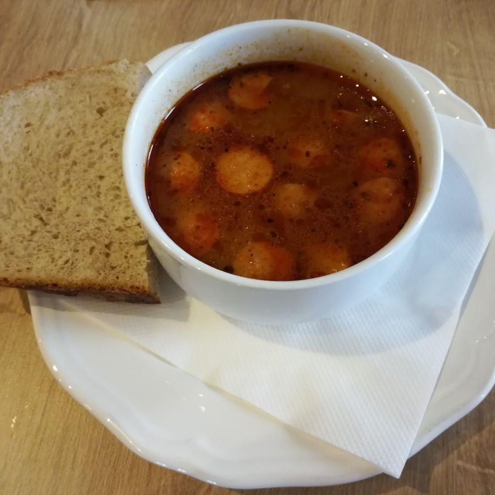

Frankfurtská polievka podľa @peterskvarenina12 — Normy Jedál
Bol som sa naobedovať v reštaurácii Point 21 v Trnave. Dal som si tam obedové menu obsahujúce: frankfurtskú polievku s chlebom, bravčový rezeň s americkými zemiakmi, uhorkový šalát a 0,3 l kofoly.
#trnava #obed #obedovemenu #point21 #dnesjem #dnesnemenu #dnesneobedovemenu #kdejem #polievka #frankfurtskapolievka #chlieb